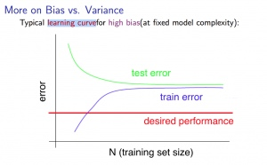
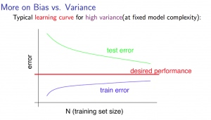

Machine Learning (6): Advice for applying machine learning and Machine Learning System Design
ML: Advice for applying machine learning
Deciding What to Try Next
Errors in your predictions can be troubleshooted by:
- Getting more training examples
- Trying smaller sets of features
- Trying additional features
- Trying polynomial features
- Increasing or decreasing λ
Don't just pick one of these avenues at random. We'll explore diagnostic techniques for choosing one of the above solutions in the following sections.
Evaluating a Hypothesis
A hypothesis may have low error for the training examples but still be inaccurate (because of overfitting).
With a given dataset of training examples, we can split up the data into two sets: a training set and a test set .
The new procedure using these two sets is then:
- Learn \(\Theta\) and minimize \(J_{train}(\Theta)\) using the training set
- Compute the test set error \(J_{test}(\Theta)\)
The test set error
- For linear regression: \(J_{test}(\Theta) = \dfrac{1}{2m_{test}} \sum_{i=1}^{m_{test}}(h_\Theta(x^{(i)}_{test}) - y^{(i)}_{test})^2\)
- For classification ~ Misclassification error (aka 0/1 misclassification error):
\(err(h_\Theta(x),y) = \{\begin{matrix} 1 & \mbox{if } h_\Theta(x) \geq 0.5\ and\ y = 0\ or\ h_\Theta(x) < 0.5\ and\ y = 1\newline 0 & \mbox otherwise \end{matrix}\)
This gives us a binary 0 or 1 error result based on a misclassification.
The average test error for the test set is
\(\text{Test Error} = \dfrac{1}{m_{test}} \sum^{m_{test}}_{i=1} err(h_\Theta(x^{(i)}_{test}), y^{(i)}_{test})\)
This gives us the proportion of the test data that was misclassified.
Model Selection and Train/Validation/Test Sets
- Just because a learning algorithm fits a training set well, that does not mean it is a good hypothesis.
- The error of your hypothesis as measured on the data set with which you trained the parameters will be lower than any other data set.
In order to choose the model of your hypothesis, you can test each degree of polynomial and look at the error result.
Without the Validation Set (note: this is a bad method - do not use it)
- Optimize the parameters in Θ using the training set for each polynomial degree.
- Find the polynomial degree d with the least error using the test set.
- Estimate the generalization error also using the test set with \(J_{test}(\Theta^{(d)})\), (d = theta from polynomial with lower error);
In this case, we have trained one variable, d, or the degree of the polynomial, using the test set. This will cause our error value to be greater for any other set of data.
Use of the CV set
To solve this, we can introduce a third set, the Cross Validation Set , to serve as an intermediate set that we can train d with. Then our test set will give us an accurate, non-optimistic error.
One example way to break down our dataset into the three sets is:
- Training set: 60%
- Cross validation set: 20%
- Test set: 20%
We can now calculate three separate error values for the three different sets.
With the Validation Set (note: this method presumes we do not also use the CV set for regularization)
Optimize the parameters in Θ using the training set for each polynomial degree.
Find the polynomial degree d with the least error using the cross validation set.
Estimate the generalization error using the test set with \(J_{test}(\Theta^{(d)})\), (d = theta from polynomial with lower error);
This way, the degree of the polynomial d has not been trained using the test set.
(Mentor note: be aware that using the CV set to select 'd' means that we cannot also use it for the validation curve process of setting the lambda value).
Diagnosing Bias vs. Variance
In this section we examine the relationship between the degree of the polynomial d and the underfitting or overfitting of our hypothesis.
We need to distinguish whether bias or variance is the problem contributing to bad predictions.
High bias is underfitting and high variance is overfitting. We need to find a golden mean between these two.
The training error will tend to decrease as we increase the degree d of the polynomial.
At the same time, the cross validation error will tend to decrease as we increase d up to a point, and then it will increase as d is increased, forming a convex curve.
High bias (underfitting) : both \(J_{train}(\Theta)\) and \(J_{CV}(\Theta)\) will be high. Also, \(J_{CV}(\Theta) \approx J_{train}(\Theta)\).
High variance (overfitting) : \(J_{train}(\Theta)\) will be low and \(J_{CV}(\Theta)\) will be much greater than\(J_{train}(\Theta)\).
The is represented in the figure below:

Regularization and Bias/Variance
Instead of looking at the degree d contributing to bias/variance, now we will look at the regularization parameter λ.
- Large λ: High bias (underfitting)
- Intermediate λ: just right
- Small λ: High variance (overfitting)
A large lambda heavily penalizes all the Θ parameters, which greatly simplifies the line of our resulting function, so causes underfitting.
The relationship of λ to the training set and the variance set is as follows:
Low λ : \(J_{train}(\Theta)\) is low and \(J_{CV}(\Theta)\) is high (high variance/overfitting).
Intermediate λ : \(J_{train}(\Theta)\) and \(J_{CV}(\Theta)\) are somewhat low and \(J_{train}(\Theta) \approx J_{CV}(\Theta)\).
Large λ : both \(J_{train}(\Theta)\) and \(J_{CV}(\Theta)\) will be high (underfitting /high bias)
The figure below illustrates the relationship between lambda and the hypothesis:

In order to choose the model and the regularization λ, we need:
- Create a list of lambdas (i.e. λ∈{0,0.01,0.02,0.04,0.08,0.16,0.32,0.64,1.28,2.56,5.12,10.24}); 2. Create a set of models with different degrees or any other variants. 3. Iterate through the \(\lambda\)s and for each \(\lambda\) go through all the models to learn some \(\Theta\). 4. Compute the cross validation error using the learned Θ (computed with λ) on the \(J_{CV}(\Theta)\) without regularization or λ = 0. 5. Select the best combo that produces the lowest error on the cross validation set. 6. Using the best combo Θ and λ, apply it on \(J_{test}(\Theta)\) to see if it has a good generalization of the problem.
Learning Curves
Training 3 examples will easily have 0 errors because we can always find a quadratic curve that exactly touches 3 points.
- As the training set gets larger, the error for a quadratic function increases.
- The error value will plateau out after a certain m, or training set size.
With high bias
Low training set size : causes \(J_{train}(\Theta)\) to be low and \(J_{CV}(\Theta)\) to be high.
Large training set size : causes both \(J_{train}(\Theta)\) and \(J_{CV}(\Theta)\) to be high with \(J_{train}(\Theta)\)≈\(J_{CV}(\Theta)\).
If a learning algorithm is suffering from high bias , getting more training data will not (by itself) help much .
For high variance, we have the following relationships in terms of the training set size:
With high variance
Low training set size : \(J_{train}(\Theta)\) will be low and \(J_{CV}(\Theta)\) will be high.
Large training set size : \(J_{train}(\Theta)\) increases with training set size and \(J_{CV}(\Theta)\) continues to decrease without leveling off. Also, \(J_{train}(\Theta)\)<\(J_{CV}(\Theta)\) but the difference between them remains significant.
If a learning algorithm is suffering from high variance , getting more training data is likely to help.


Deciding What to Do Next Revisited
Our decision process can be broken down as follows:
- Getting more training examples
Fixes high variance
- Trying smaller sets of features
Fixes high variance
- Adding features
Fixes high bias
- Adding polynomial features
Fixes high bias
- Decreasing λ
Fixes high bias
- Increasing λ
Fixes high variance
Diagnosing Neural Networks
- A neural network with fewer parameters is prone to underfitting . It is also computationally cheaper .
- A large neural network with more parameters is prone to overfitting . It is also computationally expensive . In this case you can use regularization (increase λ) to address the overfitting.
Using a single hidden layer is a good starting default. You can train your neural network on a number of hidden layers using your cross validation set.
Model Selection:
Choosing M the order of polynomials.
How can we tell which parameters Θ to leave in the model (known as "model selection")?
There are several ways to solve this problem:
- Get more data (very difficult).
- Choose the model which best fits the data without overfitting (very difficult).
- Reduce the opportunity for overfitting through regularization.
Bias: approximation error (Difference between expected value and optimal value)
- High Bias = UnderFitting (BU)
- \(J_{train}(\Theta)\) and \(J_{CV}(\Theta)\) both will be high and \(J_{train}(\Theta)\) ≈ \(J_{CV}(\Theta)\)
Variance: estimation error due to finite data
- High Variance = OverFitting (VO)
- \(J_{train}(\Theta)\) is low and \(J_{CV}(\Theta)\) ≫\(J_{train}(\Theta)\)
Intuition for the bias-variance trade-off:
- Complex model => sensitive to data => much affected by changes in X => high variance, low bias.
- Simple model => more rigid => does not change as much with changes in X => low variance, high bias.
One of the most important goals in learning: finding a model that is just right in the bias-variance trade-off.
Regularization Effects:
- Small values of λ allow model to become finely tuned to noise leading to large variance => overfitting.
- Large values of λ pull weight parameters to zero leading to large bias => underfitting.
Model Complexity Effects:
- Lower-order polynomials (low model complexity) have high bias and low variance. In this case, the model fits poorly consistently.
- Higher-order polynomials (high model complexity) fit the training data extremely well and the test data extremely poorly. These have low bias on the training data, but very high variance.
- In reality, we would want to choose a model somewhere in between, that can generalize well but also fits the data reasonably well.
A typical rule of thumb when running diagnostics is:
- More training examples fixes high variance but not high bias.
- Fewer features fixes high variance but not high bias.
- Additional features fixes high bias but not high variance.
- The addition of polynomial and interaction features fixes high bias but not high variance.
- When using gradient descent, decreasing lambda can fix high bias and increasing lambda can fix high variance (lambda is the regularization parameter).
- When using neural networks, small neural networks are more prone to under-fitting and big neural networks are prone to over-fitting. Cross-validation of network size is a way to choose alternatives.
ML:Machine Learning System Design
Prioritizing What to Work On
Different ways we can approach a machine learning problem:
- Collect lots of data (for example "honeypot" project but doesn't always work)
- Develop sophisticated features (for example: using email header data in spam emails)
- Develop algorithms to process your input in different ways (recognizing misspellings in spam).
It is difficult to tell which of the options will be helpful.
Error Analysis
The recommended approach to solving machine learning problems is:
- Start with a simple algorithm, implement it quickly, and test it early.
- Plot learning curves to decide if more data, more features, etc. will help
- Error analysis: manually examine the errors on examples in the cross validation set and try to spot a trend.
It's important to get error results as a single, numerical value. Otherwise it is difficult to assess your algorithm's performance.
You may need to process your input before it is useful. For example, if your input is a set of words, you may want to treat the same word with different forms (fail/failing/failed) as one word, so must use "stemming software" to recognize them all as one.
Error Metrics for Skewed Classes
It is sometimes difficult to tell whether a reduction in error is actually an improvement of the algorithm.
- For example: In predicting a cancer diagnoses where 0.5% of the examples have cancer, we find our learning algorithm has a 1% error. However, if we were to simply classify every single example as a 0, then our error would reduce to 0.5% even though we did not improve the algorithm.
This usually happens with skewed classes ; that is, when our class is very rare in the entire data set.
Or to say it another way, when we have lot more examples from one class than from the other class.
For this we can use Precision/Recall .
- Predicted: 1, Actual: 1 --- True positive
- Predicted: 0, Actual: 0 --- True negative
- Predicted: 0, Actual, 1 --- False negative
- Predicted: 1, Actual: 0 --- False positive
Precision : of all patients we predicted where y=1, what fraction actually has cancer?
\(\dfrac{\text{True Positives}}{\text{Total number of predicted positives}} = \dfrac{\text{True Positives}}{\text{True Positives}+\text{False positives}}\)
Recall : Of all the patients that actually have cancer, what fraction did we correctly detect as having cancer?
\(\dfrac{\text{True Positives}}{\text{Total number of actual positives}}= \dfrac{\text{True Positives}}{\text{True Positives}+\text{False negatives}}\)
These two metrics give us a better sense of how our classifier is doing. We want both precision and recall to be high.
In the example at the beginning of the section, if we classify all patients as 0, then our recall will be \(\dfrac{0}{0 + f} = 0\), so despite having a lower error percentage, we can quickly see it has worse recall.
Accuracy = \(\frac {\text{true positive + true negative}} {\text{total population}}\)
Note 1: if an algorithm predicts only negatives like it does in one of exercises, the precision is not defined, it is impossible to divide by 0. F1 score will not be defined too.
Trading Off Precision and Recall
We might want a confident prediction of two classes using logistic regression. One way is to increase our threshold:
Predict 1 if: \(h_\theta(x) \geq 0.7\)
Predict 0 if: \(h_\theta(x) < 0.7\)
This way, we only predict cancer if the patient has a 70% chance.
Doing this, we will have higher precision but lower recall (refer to the definitions in the previous section).
In the opposite example, we can lower our threshold:
Predict 1 if: \(h_\theta(x) \geq 0.3\)
Predict 0 if: \(h_\theta(x) < 0.3\)
That way, we get a very safe prediction. This will cause higher recall but lower precision .
The greater the threshold, the greater the precision and the lower the recall.
The lower the threshold, the greater the recall and the lower the precision.
In order to turn these two metrics into one single number, we can take the F value .
One way is to take the average :
\(\dfrac{P+R}{2}\)
This does not work well. If we predict all y=0 then that will bring the average up despite having 0 recall. If we predict all examples as y=1, then the very high recall will bring up the average despite having 0 precision.
A better way is to compute the F Score (or F1 score):
\(\text{F Score} = 2\dfrac{PR}{P + R}\)
In order for the F Score to be large, both precision and recall must be large.
We want to train precision and recall on the cross validation set so as not to bias our test set.
Data for Machine Learning
How much data should we train on?
In certain cases, an "inferior algorithm," if given enough data, can outperform a superior algorithm with less data.
We must choose our features to have enough information. A useful test is: Given input x, would a human expert be able to confidently predict y?
Rationale for large data : if we have a low bias algorithm (many features or hidden units making a very complex function), then the larger the training set we use, the less we will have overfitting (and the more accurate the algorithm will be on the test set).
Quiz instructions
When the quiz instructions tell you to enter a value to "two decimal digits", what it really means is "two significant digits". So, just for example, the value 0.0123 should be entered as "0.012", not "0.01".
References:
Machine Learning(9): Anomaly Detection AND Recommender System
-
ML:Anomaly Detection
- Problem Motivation
- Gaussian Distribution
- Algorithm
- Developing and Evaluating an Anomaly Detection System
- Anomaly Detection vs. Supervised Learning
- Choosing What Features to Use
- Multivariate Gaussian Distribution
- Anomaly Detection using the Multivariate Gaussian Distribution
- ML:Recommender Systems
- Problem Formulation
- Content Based Recommendations
- Collaborative Filtering
- Collaborative Filtering Algorithm
- Vectorization: Low Rank Matrix Factorization
- Implementation Detail: Mean Normalization
ML:Anomaly Detection
Problem Motivation
Just like in other learning problems, we are given a dataset \({x^{(1)}, x^{(2)},\dots,x^{(m)}}\).
We are then given a new example, \(x_{test}\), and we want to know whether this new example is abnormal/anomalous.
We define a "model" p(x) that tells us the probability the example is not anomalous. We also use a threshold ϵ (epsilon) as a dividing line so we can say which examples are anomalous and which are not.
A very common application of anomaly detection is detecting fraud:
\(x^{(i)} =\) features of user i's activities
Model p(x) from the data.
Identify unusual users by checking which have p(x)<ϵ.
If our anomaly detector is flagging too many anomalous examples, then we need to decrease our threshold ϵ
Gaussian Distribution
The Gaussian Distribution is a familiar bell-shaped curve that can be described by a function \(\mathcal{N}(\mu,\sigma^2)\)
Let x∈ℝ. If the probability distribution of x is Gaussian with mean μ, variance \(\sigma^2\), then:
\(x \sim \mathcal{N}(\mu, \sigma^2)\)
The little ∼ or 'tilde' can be read as "distributed as."
The Gaussian Distribution is parameterized by a mean and a variance.
Mu, or μ, describes the center of the curve, called the mean. The width of the curve is described by sigma, or σ, called the standard deviation.
The full function is as follows:
\(\large p(x;\mu,\sigma^2) = \dfrac{1}{\sigma\sqrt{(2\pi)}}e^{-\dfrac{1}{2}(\dfrac{x - \mu}{\sigma})^2}\)
We can estimate the parameter μ from a given dataset by simply taking the average of all the examples:
\(\mu = \dfrac{1}{m}\displaystyle \sum_{i=1}^m x^{(i)}\)
We can estimate the other parameter, \(\sigma^2\), with our familiar squared error formula:
\(\sigma^2 = \dfrac{1}{m}\displaystyle \sum_{i=1}^m(x^{(i)} - \mu)^2\)

Algorithm
Given a training set of examples, \(\lbrace x^{(1)},\dots,x^{(m)}\rbrace\) where each example is a vector, \(x \in \mathbb{R}^n\).
\(p(x) = p(x_1;\mu_1,\sigma_1^2)p(x_2;\mu_2,\sigma^2_2)\cdots p(x_n;\mu_n,\sigma^2_n)\)
In statistics, this is called an "independence assumption" on the values of the features inside training example x.
More compactly, the above expression can be written as follows:
\(= \displaystyle \prod^n_{j=1} p(x_j;\mu_j,\sigma_j^2)\)
The algorithm
Choose features \(x_i\) that you think might be indicative of anomalous examples.
Fit parameters \(\mu_1,\dots,\mu_n,\sigma_1^2,\dots,\sigma_n^2\)
Calculate \(\mu_j = \dfrac{1}{m}\displaystyle \sum_{i=1}^m x_j^{(i)}\)
Calculate \(\sigma^2_j = \dfrac{1}{m}\displaystyle \sum_{i=1}^m(x_j^{(i)} - \mu_j)^2\)
Given a new example x, compute p(x):
\(p(x) = \displaystyle \prod^n_{j=1} p(x_j;\mu_j,\sigma_j^2) = \prod\limits^n_{j=1} \dfrac{1}{\sqrt{2\pi}\sigma_j}exp(-\dfrac{(x_j - \mu_j)^2}{2\sigma^2_j})\)
Anomaly if p(x)<ϵ
A vectorized version of the calculation for μ is \(\mu = \dfrac{1}{m}\displaystyle \sum_{i=1}^m x^{(i)}\). You can vectorize \(\sigma^2\) similarly.
Developing and Evaluating an Anomaly Detection System
To evaluate our learning algorithm, we take some labeled data, categorized into anomalous and non-anomalous examples ( y = 0 if normal, y = 1 if anomalous).
Among that data, take a large proportion of good , non-anomalous data for the training set on which to train p(x).
Then, take a smaller proportion of mixed anomalous and non-anomalous examples (you will usually have many more non-anomalous examples) for your cross-validation and test sets.
For example, we may have a set where 0.2% of the data is anomalous. We take 60% of those examples, all of which are good (y=0) for the training set. We then take 20% of the examples for the cross-validation set (with 0.1% of the anomalous examples) and another 20% from the test set (with another 0.1% of the anomalous).
In other words, we split the data 60/20/20 training/CV/test and then split the anomalous examples 50/50 between the CV and test sets.
Algorithm evaluation:
Fit model p(x) on training set \(\lbrace x^{(1)},\dots,x^{(m)} \rbrace\)
On a cross validation/test example x, predict:
If p(x) < ϵ ( anomaly ), then y=1
If p(x) ≥ ϵ ( normal ), then y=0
Possible evaluation metrics (see "Machine Learning System Design" section):
True positive, false positive, false negative, true negative.
Precision/recall
\(F_1\) score
Note that we use the cross-validation set to choose parameter ϵ
Anomaly Detection vs. Supervised Learning
When do we use anomaly detection and when do we use supervised learning?
Use anomaly detection when...
We have a very small number of positive examples (y=1 ... 0-20 examples is common) and a large number of negative (y=0) examples.
We have many different "types" of anomalies and it is hard for any algorithm to learn from positive examples what the anomalies look like; future anomalies may look nothing like any of the anomalous examples we've seen so far.
Use supervised learning when...
We have a large number of both positive and negative examples. In other words, the training set is more evenly divided into classes.
We have enough positive examples for the algorithm to get a sense of what new positives examples look like. The future positive examples are likely similar to the ones in the training set.
Choosing What Features to Use
The features will greatly affect how well your anomaly detection algorithm works.
We can check that our features are gaussian by plotting a histogram of our data and checking for the bell-shaped curve.
Some transforms we can try on an example feature x that does not have the bell-shaped curve are:
log(x)
log(x+1)
log(x+c) for some constant
\(\sqrt{x}\)
\(x^{1/3}\)
We can play with each of these to try and achieve the gaussian shape in our data.
There is an error analysis procedure for anomaly detection that is very similar to the one in supervised learning.
Our goal is for p(x) to be large for normal examples and small for anomalous examples.
One common problem is when p(x) is similar for both types of examples. In this case, you need to examine the anomalous examples that are giving high probability in detail and try to figure out new features that will better distinguish the data.
In general, choose features that might take on unusually large or small values in the event of an anomaly.
Multivariate Gaussian Distribution
The multivariate gaussian distribution is an extension of anomaly detection and may (or may not) catch more anomalies.
Instead of modeling \(p(x_1),p(x_2),\dots\) separately, we will model p(x) all in one go. Our parameters will be: \(\mu \in \mathbb{R}^n\) and \(\Sigma \in \mathbb{R}^{n \times n}\)
\(p(x;\mu,\Sigma) = \dfrac{1}{(2\pi)^{n/2} |\Sigma|^{1/2}} exp(-1/2(x-\mu)^T\Sigma^{-1}(x-\mu))\)
The important effect is that we can model oblong gaussian contours, allowing us to better fit data that might not fit into the normal circular contours.
Varying Σ changes the shape, width, and orientation of the contours. Changing μ will move the center of the distribution.
Check also:
- The Multivariate Gaussian Distribution http://cs229.stanford.edu/section/gaussians.pdf Chuong B. Do, October 10, 2008.
Following examples illustrate the basic meaning of parameters in multivariable gaussian distribution:
mean = [0, 0]
cov = [[1, 0], [0, 1]] # diagonal covariance
# Draw random samples from a multivariate normal distribution
x, y = np.random.multivariate_normal(mean, cov, 5000).T
plt.plot(x, y, 'x',color='y')
plt.axis('equal')
plt.hold
# change mean
mean = [0, 10]
x, y = np.random.multivariate_normal(mean, cov, 5000).T
plt.plot(x, y, '.', color='b')
# change variances
mean = [10, 10]
cov = [[1, 0], [0, 10]] # diagonal covariance
x, y = np.random.multivariate_normal(mean, cov, 5000).T
plt.plot(x, y, '-', color='r')
plt.show()

Anomaly Detection using the Multivariate Gaussian Distribution
When doing anomaly detection with multivariate gaussian distribution, we compute μ and Σ normally. We then compute p(x) using the new formula in the previous section and flag an anomaly if p(x) < ϵ.
The original model for p(x) corresponds to a multivariate Gaussian where the contours of \(p(x;\mu,\Sigma)\) are axis-aligned.
The multivariate Gaussian model can automatically capture correlations between different features of x.
However, the original model maintains some advantages: it is computationally cheaper (no matrix to invert, which is costly for large number of features) and it performs well even with small training set size (in multivariate Gaussian model, it should be greater than the number of features for Σ to be invertible).
ML:Recommender Systems
Problem Formulation
Recommendation is currently a very popular application of machine learning.
Say we are trying to recommend movies to customers. We can use the following definitions
\(n_u =\) number of users
\(n_m =\) number of movies
\(r(i,j) = 1\) if user j has rated movie i
\(y(i,j) =\) rating given by user j to movie i (defined only if r(i,j)=1)
Content Based Recommendations
We can introduce two features, \(x_1\) and \(x_2\) which represents how much romance or how much action a movie may have (on a scale of 0−1).
One approach is that we could do linear regression for every single user. For each user j, learn a parameter \(\theta^{(j)} \in \mathbb{R}^3\). Predict user j as rating movie i with \((\theta^{(j)})^Tx^{(i)}\) stars.
\(\theta^{(j)} =\) parameter vector for user j
\(x^{(i)} =\) feature vector for movie i
For user j, movie i, predicted rating: \((\theta^{(j)})^T(x^{(i)})\)
- \(m^{(j)} =\) number of movies rated by user j
To learn \(\theta^{(j)}\), we do the following
\(min_{\theta^{(j)}} = \dfrac{1}{2}\displaystyle \sum_{i:r(i,j)=1} ((\theta^{(j)})^T(x^{(i)}) - y^{(i,j)})^2 + \dfrac{\lambda}{2} \sum_{k=1}^n(\theta_k^{(j)})^2\)
This is our familiar linear regression. The base of the first summation is choosing all i such that \(r(i,j) = 1\).
To get the parameters for all our users, we do the following:
\(min_{\theta^{(1)},\dots,\theta^{(n_u)}} = \dfrac{1}{2}\displaystyle \sum_{j=1}^{n_u} \sum_{i:r(i,j)=1} ((\theta^{(j)})^T(x^{(i)}) - y^{(i,j)})^2 + \dfrac{\lambda}{2} \sum_{j=1}^{n_u} \sum_{k=1}^n(\theta_k^{(j)})^2\)
We can apply our linear regression gradient descent update using the above cost function.
The only real difference is that we eliminate the constant \(\dfrac{1}{m}\).
Collaborative Filtering
It can be very difficult to find features such as "amount of romance" or "amount of action" in a movie. To figure this out, we can use feature finders .
We can let the users tell us how much they like the different genres, providing their parameter vector immediately for us.
To infer the features from given parameters, we use the squared error function with regularization over all the users:
\(min_{x^{(1)},\dots,x^{(n_m)}} \dfrac{1}{2} \displaystyle \sum_{i=1}^{n_m} \sum_{j:r(i,j)=1} ((\theta^{(j)})^T x^{(i)} - y^{(i,j)})^2 + \dfrac{\lambda}{2}\sum_{i=1}^{n_m} \sum_{k=1}^{n} (x_k^{(i)})^2\)
You can also randomly guess the values for theta to guess the features repeatedly. You will actually converge to a good set of features.
Collaborative Filtering Algorithm
To speed things up, we can simultaneously minimize our features and our parameters:
\(J(x,\theta) = \dfrac{1}{2} \displaystyle \sum_{(i,j):r(i,j)=1}((\theta^{(j)})^Tx^{(i)} - y^{(i,j)})^2 + \dfrac{\lambda}{2}\sum_{i=1}^{n_m} \sum_{k=1}^{n} (x_k^{(i)})^2 + \dfrac{\lambda}{2}\sum_{j=1}^{n_u} \sum_{k=1}^{n} (\theta_k^{(j)})^2\)
It looks very complicated, but we've only combined the cost function for theta and the cost function for x.
Because the algorithm can learn them itself, the bias units where x0=1 have been removed, therefore x∈ℝn and θ∈ℝn.
These are the steps in the algorithm:
Initialize \(x^{(i)},...,x^{(n_m)},\theta^{(1)},...,\theta^{(n_u)}\) to small random values. This serves to break symmetry and ensures that the algorithm learns features \(x^{(i)},...,x^{(n_m)}\) that are different from each other.
Minimize \(J(x^{(i)},...,x^{(n_m)},\theta^{(1)},...,\theta^{(n_u)})\) using gradient descent (or an advanced optimization algorithm).E.g. for every \(j=1,...,n_u,i=1,...n_m\):\(x_k^{(i)} := x_k^{(i)} - \alpha\left (\displaystyle \sum_{j:r(i,j)=1}{((\theta^{(j)})^T x^{(i)} - y^{(i,j)}) \theta_k^{(j)}} + \lambda x_k^{(i)} \right)\)\(\theta_k^{(j)} := \theta_k^{(j)} - \alpha\left (\displaystyle \sum_{i:r(i,j)=1}{((\theta^{(j)})^T x^{(i)} - y^{(i,j)}) x_k^{(i)}} + \lambda \theta_k^{(j)} \right)\)
For a user with parameters θ and a movie with (learned) features x, predict a star rating of \(\theta^Tx\).
Vectorization: Low Rank Matrix Factorization
Given matrices X (each row containing features of a particular movie) and Θ (each row containing the weights for those features for a given user), then the full matrix Y of all predicted ratings of all movies by all users is given simply by: \(Y = X\Theta^T\).
Predicting how similar two movies i and j are can be done using the distance between their respective feature vectors x. Specifically, we are looking for a small value of \(||x^{(i)} - x^{(j)}||\).
Implementation Detail: Mean Normalization
If the ranking system for movies is used from the previous lectures, then new users (who have watched no movies), will be assigned new movies incorrectly. Specifically, they will be assigned θ with all components equal to zero due to the minimization of the regularization term. That is, we assume that the new user will rank all movies 0, which does not seem intuitively correct.
We rectify this problem by normalizing the data relative to the mean. First, we use a matrix Y to store the data from previous ratings, where the ith row of Y is the ratings for the ith movie and the jth column corresponds to the ratings for the jth user.
We can now define a vector
\(\mu = [\mu_1, \mu_2, \dots , \mu_{n_m}]\)
such that
\(\mu_i = \frac{\sum_{j:r(i,j)=1}{Y_{i,j}}}{\sum_{j}{r(i,j)}}\)
Which is effectively the mean of the previous ratings for the ith movie (where only movies that have been watched by users are counted). We now can normalize the data by subtracting u, the mean rating, from the actual ratings for each user (column in matrix Y):
As an example, consider the following matrix Y and mean ratings μ:
\(Y = \begin{bmatrix} 5 & 5 & 0 & 0 \newline 4 & ? & ? & 0 \newline 0 & 0 & 5 & 4 \newline 0 & 0 & 5 & 0 \newline \end{bmatrix}, \quad \mu = \begin{bmatrix} 2.5 \newline 2 \newline 2.25 \newline 1.25 \newline \end{bmatrix}\)
The resulting Y′ vector is:
\(Y' = \begin{bmatrix} 2.5 & 2.5 & -2.5 & -2.5 \newline 2 & ? & ? & -2 \newline -.2.25 & -2.25 & 3.75 & 1.25 \newline -1.25 & -1.25 & 3.75 & -1.25 \end{bmatrix}\)
Now we must slightly modify the linear regression prediction to include the mean normalization term:
\((\theta^{(j)})^T x^{(i)} + \mu_i\)
Now, for a new user, the initial predicted values will be equal to the μ term instead of simply being initialized to zero, which is more accurate.


Copyright © 2015 Powered by MWeb, Theme used GitHub CSS.